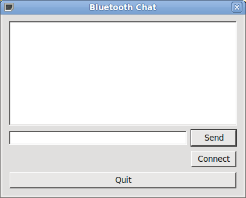

Files:
The Bluetooth Chat example shows how to use the Qt Connectivity Bluetooth API to communicate with another application on a remote device using Bluetooth.

The Bluetooth Chat example implements a simple chat program between multiple parties. The application always acts as both a server and a client eliminating the need to determine who should connect to whom.
The chat server is implemented by the ChatServer class. The ChatServer class is declared as:
class ChatServer : public QObject
{
Q_OBJECT
public:
explicit ChatServer(QObject *parent = 0);
~ChatServer();
void startServer();
void stopServer();
public slots:
void sendMessage(const QString &message);
signals:
void messageReceived(const QString &sender, const QString &message);
void clientConnected(const QString &name);
void clientDisconnected(const QString &name);
private slots:
void clientConnected();
void clientDisconnected();
void readSocket();
private:
QRfcommServer *rfcommServer;
QBluetoothServiceInfo serviceInfo;
QList<QBluetoothSocket *> clientSockets;
};
The first thing the chat server needs to do is create an instance of QRfcommServer to listen for incoming Bluetooth connections. Our clientConnected() slot will be called whenever a new connection is created.
rfcommServer = new QRfcommServer(this);
connect(rfcommServer, SIGNAL(newConnection()), this, SLOT(clientConnected()));
rfcommServer->listen();
The chat server is only useful if others know that it is there. To enable other devices to discover it a record describing the service needs to be published in the systems SDP (Service Discovery Protocol) database. The QBluetoothServiceInfo class encapsulates a service record.
We will publish a service record that contains some textural descriptions of the services, a UUID that uniquely identifies the service, the discoverability attribute and connection parameters.
The textural description of the service is stored in the ServiceName, ServiceDescription and ServiceProvider attributes.
serviceInfo.setAttribute(QBluetoothServiceInfo::ServiceName, tr("Bt Chat Server"));
serviceInfo.setAttribute(QBluetoothServiceInfo::ServiceDescription,
tr("Example bluetooth chat server"));
serviceInfo.setAttribute(QBluetoothServiceInfo::ServiceProvider, tr("Nokia, QtDF"));
Bluetooth uses UUIDs as unique identifiers. Our chat service is uses a randomly generated UUID.
static const QLatin1String serviceUuid("e8e10f95-1a70-4b27-9ccf-02010264e9c8");
serviceInfo.setServiceUuid(QBluetoothUuid(serviceUuid));
A Bluetooth service is only discoverable if it is in the PublicBrowseGroup.
serviceInfo.setAttribute(QBluetoothServiceInfo::BrowseGroupList,
QBluetoothUuid(QBluetoothUuid::PublicBrowseGroup));
The ProtocolDescriptorList attribute is used to publish the connection parameters that the remote device requires to connect to our service. Here we specify that the Rfcomm protocol is used and set the port number to port that our rfcommServer instance is listening to.
QBluetoothServiceInfo::Sequence protocolDescriptorList;
QBluetoothServiceInfo::Sequence protocol;
protocol << QVariant::fromValue(QBluetoothUuid(QBluetoothUuid::L2cap));
protocolDescriptorList.append(QVariant::fromValue(protocol));
protocol.clear();
protocol << QVariant::fromValue(QBluetoothUuid(QBluetoothUuid::Rfcomm))
<< QVariant::fromValue(quint8(rfcommServer->serverPort()));
protocolDescriptorList.append(QVariant::fromValue(protocol));
serviceInfo.setAttribute(QBluetoothServiceInfo::ProtocolDescriptorList,
protocolDescriptorList);
Finally we register the service record with the system.
serviceInfo.registerService();
As mentioned earlier incoming connections are handled in the clientConnected() slot. In this slot we get a pointer a QBluetoothSocket representing the next pending connection connect up slots to the readyRead() and disconnected() signals and emit a signal to notify others that a new client has connected.
void ChatServer::clientConnected()
{
QBluetoothSocket *socket = rfcommServer->nextPendingConnection();
if (!socket)
return;
connect(socket, SIGNAL(readyRead()), this, SLOT(readSocket()));
connect(socket, SIGNAL(disconnected()), this, SLOT(clientDisconnected()));
clientSockets.append(socket);
emit clientConnected(socket->peerName());
}
The readSocket() slot is called whenever data is ready to be read from a client socket. The slot reads individual lines from the socket converts them from UTF-8 and emits the messageReceived() signal.
void ChatServer::readSocket()
{
QBluetoothSocket *socket = qobject_cast<QBluetoothSocket *>(sender());
if (!socket)
return;
while (socket->canReadLine()) {
QByteArray line = socket->readLine().trimmed();
emit messageReceived(socket->peerName(),
QString::fromUtf8(line.constData(), line.length()));
}
}
The clientDisconnected() slot is called whenever a client disconnects from the service. The slot emits a signal to notify others that a client has disconnected and deletes the socket.
void ChatServer::clientDisconnected()
{
QBluetoothSocket *socket = qobject_cast<QBluetoothSocket *>(sender());
if (!socket)
return;
emit clientDisconnected(socket->peerName());
clientSockets.removeOne(socket);
socket->deleteLater();
}
The sendMessage() slot is used to send a message to all connected clients. The message is converted into UTF-8 and appended with a newline before being sent to all clients.
void ChatServer::sendMessage(const QString &message)
{
QByteArray text = message.toUtf8() + '\n';
foreach (QBluetoothSocket *socket, clientSockets)
socket->write(text);
}
When the chat server is stop the service record is removed from the system SDP database, all connected client sockets are deleted and the QRfcommServer instance is deleted.
void ChatServer::stopServer()
{
// Unregister service
serviceInfo.unregisterService();
// Close sockets
qDeleteAll(clientSockets);
// Close server
delete rfcommServer;
rfcommServer = 0;
}
The chat client is implemented by the ChatClient class. The ChatClient class is declared as:
class ChatClient : public QObject
{
Q_OBJECT
public:
explicit ChatClient(QObject *parent = 0);
~ChatClient();
void startClient(const QBluetoothServiceInfo &remoteService);
void stopClient();
public slots:
void sendMessage(const QString &message);
signals:
void messageReceived(const QString &sender, const QString &message);
void connected(const QString &name);
void disconnected();
private slots:
void readSocket();
void connected();
private:
QBluetoothSocket *socket;
};
The client creates a new QBluetoothSocket and connects to the remote service described by the remoteService parameter. Slots are connected to the sockets readyRead(), connected() and disconnected() signals.
void ChatClient::startClient(const QBluetoothServiceInfo &remoteService)
{
if (socket)
return;
// Connect to service
socket = new QBluetoothSocket(QBluetoothSocket::RfcommSocket);
qDebug() << "Create socket";
socket->connectToService(remoteService);
qDebug() << "ConnecttoService done";
connect(socket, SIGNAL(readyRead()), this, SLOT(readSocket()));
connect(socket, SIGNAL(connected()), this, SLOT(connected()));
connect(socket, SIGNAL(disconnected()), this, SIGNAL(disconnected()));
}
On sucessfull socket connection we emit a signal to notify other.
void ChatClient::connected()
{
emit connected(socket->peerName());
}
Similarily to the chat server the readSocket() slot is called when data is available from the socket. Lines are read individually and converted from UTF-8. The messageReceived() signal is emitted.
void ChatClient::readSocket()
{
if (!socket)
return;
while (socket->canReadLine()) {
QByteArray line = socket->readLine();
emit messageReceived(socket->peerName(),
QString::fromUtf8(line.constData(), line.length()));
}
}
The sendMessage() slot is used to send a message to the remote device. The message is converted to UTF-8 and a newline appended.
void ChatClient::sendMessage(const QString &message)
{
QByteArray text = message.toUtf8() + '\n';
socket->write(text);
}
To disconnect from the remote chat service the QBluetoothSocket instance is deleted.
void ChatClient::stopClient()
{
delete socket;
socket = 0;
}
The main window of this example is the chat dialog, implemented in the Chat class. This class displays a chat session between a single ChatServer and zero or more ChatClients. The Chat class is declared as:
class Chat : public QDialog
{
Q_OBJECT
public:
Chat(QWidget *parent = 0);
~Chat();
signals:
void sendMessage(const QString &message);
private slots:
void connectClicked();
void sendClicked();
void showMessage(const QString &sender, const QString &message);
void clientConnected(const QString &name);
void clientDisconnected(const QString &name);
void clientDisconnected();
void connected(const QString &name);
private:
Ui_Chat *ui;
ChatServer *server;
QList<ChatClient *> clients;
QString localName;
};
First we construct the user interface
ui->setupUi(this);
#if defined (Q_OS_SYMBIAN) || defined(Q_OS_WINCE) || defined(Q_WS_MAEMO_5) || defined(Q_WS_MAEMO_6)
setWindowState(Qt::WindowFullScreen);
#endif
connect(ui->quitButton, SIGNAL(clicked()), this, SLOT(accept()));
connect(ui->connectButton, SIGNAL(clicked()), this, SLOT(connectClicked()));
connect(ui->sendButton, SIGNAL(clicked()), this, SLOT(sendClicked()));
We create an instance of the ChatServer and respond to its clientConnected(), clientDiconnected() and messageReceived() signals.
server = new ChatServer(this);
connect(server, SIGNAL(clientConnected(QString)), this, SLOT(clientConnected(QString)));
connect(server, SIGNAL(clientDisconnected(QString)), this, SLOT(clientDisconnected(QString)));
connect(server, SIGNAL(messageReceived(QString,QString)),
this, SLOT(showMessage(QString,QString)));
connect(this, SIGNAL(sendMessage(QString)), server, SLOT(sendMessage(QString)));
server->startServer();
In response to the clientConnected() and clientDisconnected() signals of the ChatServer we display the typical "foo has joined chat." and "foo has left." messages in the chat session.
void Chat::clientConnected(const QString &name)
{
ui->chat->insertPlainText(QString::fromLatin1("%1 has joined chat.\n").arg(name));
}
void Chat::clientDisconnected(const QString &name)
{
ui->chat->insertPlainText(QString::fromLatin1("%1 has left.\n").arg(name));
}
Incoming messages from clients connected to the ChatServer are handled in the showMessage() slot. The message text tagged with the remote device name is displayed in the chat session.
void Chat::showMessage(const QString &sender, const QString &message)
{
ui->chat->insertPlainText(QString::fromLatin1("%1: %2\n").arg(sender, message));
}
In response to the connect button being clicked the application starts service discovery and presents a list of discovered chat services on remote devices. A ChatClient for the service selected by the user.
void Chat::connectClicked()
{
ui->connectButton->setEnabled(false);
// scan for services
RemoteSelector remoteSelector;
remoteSelector.startDiscovery(QBluetoothUuid(serviceUuid));
if (remoteSelector.exec() == QDialog::Accepted) {
QBluetoothServiceInfo service = remoteSelector.service();
qDebug() << "Connecting to service 2" << service.serviceName()
<< "on" << service.device().name();
// Create client
qDebug() << "Going to create client";
ChatClient *client = new ChatClient(this);
qDebug() << "Connecting...";
connect(client, SIGNAL(messageReceived(QString,QString)),
this, SLOT(showMessage(QString,QString)));
connect(client, SIGNAL(disconnected()), this, SLOT(clientDisconnected()));
connect(client, SIGNAL(connected(QString)), this, SLOT(connected(QString)));
connect(this, SIGNAL(sendMessage(QString)), client, SLOT(sendMessage(QString)));
qDebug() << "Start client";
client->startClient(service);
clients.append(client);
}
ui->connectButton->setEnabled(true);
}
In reponse to connected() signals from ChatClient we display the a "Joined chat with foo." message in the chat session.
void Chat::connected(const QString &name)
{
ui->chat->insertPlainText(QString::fromLatin1("Joined chat with %1.\n").arg(name));
}
Messages are sent to all remote devices via the ChatServer and ChatClient instances by emitting the sendMessage() signal.
void Chat::sendClicked()
{
ui->sendButton->setEnabled(false);
ui->sendText->setEnabled(false);
showMessage(localName, ui->sendText->text());
emit sendMessage(ui->sendText->text());
ui->sendText->clear();
ui->sendText->setEnabled(true);
ui->sendButton->setEnabled(true);
}
We need to clean up ChatClient instances when the remote device forces a disconnect.
void Chat::clientDisconnected()
{
ChatClient *client = qobject_cast<ChatClient *>(sender());
if (client) {
clients.removeOne(client);
client->deleteLater();
}
}